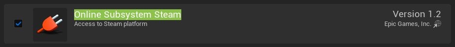
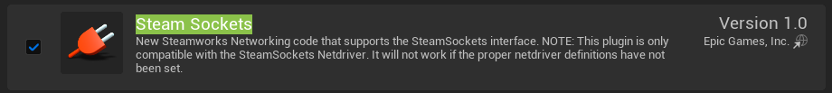
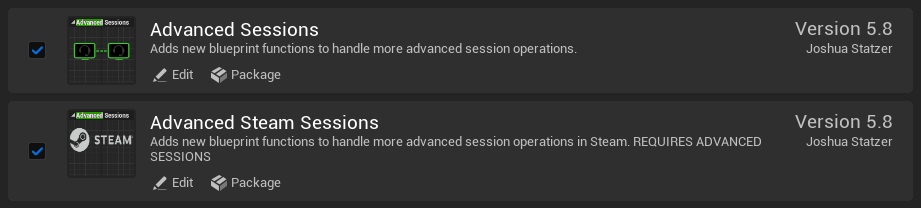
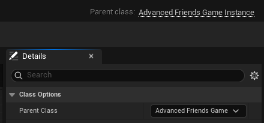
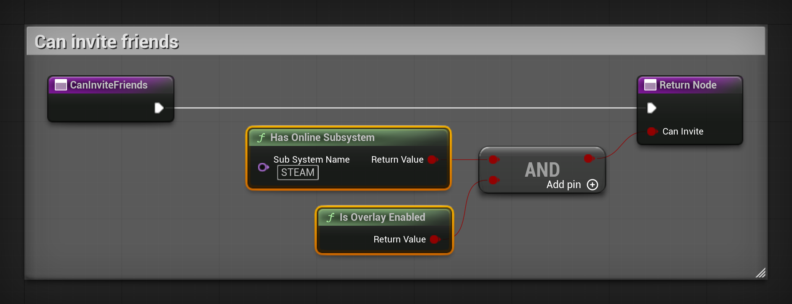
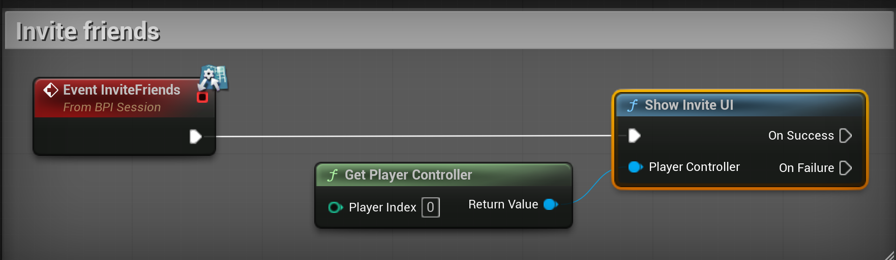
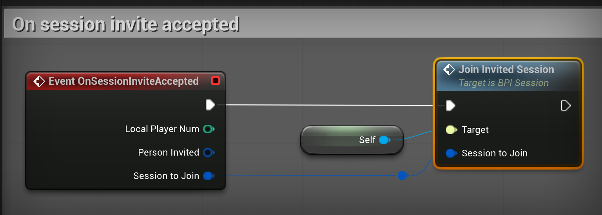

Set up Steam sessions with Advanced Steam Sessions¶
After this guide, players host and find sessions through Steam, under their Steam name. The INVITE FRIENDS button of the lobby opens the Steam invite window, and a friend who accepts lands in your lobby.
The guide uses Advanced Sessions and Advanced Steam Sessions, two free plugins by Joshua Statzer. MPFriendslopV2 does not include them, but it already has the hooks they need: Can Invite Friends, Invite Friends and Join Invited Session on the BPI_Session interface of BP_FriendslopGameInstance.
Before you start¶
- MPFriendslopV2 in Unreal Engine 5.8.
- The Steam client, installed, running and logged in.
- To test a join: a second PC with a second Steam account.
Download the plugins¶
- Open vreue4.com/advanced-sessions-binaries.
- Download
AdvancedSessionsPlugin-5.8.2. It is a zip file on Google Drive. - Unzip it. Inside
AdvancedSessionsPlugin, you find a folder namedAdvancedSessions. - Close the editor.
- Next to
MPFriendslopV2.uproject, create a folder namedPlugins. - Copy the
AdvancedSessionsfolder intoPlugins.
Your project now holds these two plugin folders:
MPFriendslopV2/
MPFriendslopV2.uproject
Plugins/
AdvancedSessions/
AdvancedSessions/
AdvancedSteamSessions/
The ExampleBlueprints folder of the zip is not needed. The plugins come already built for Unreal Engine 5.8, so the editor opens without compiling anything.
Turn the plugins on¶
- Open MPFriendslopV2.
- Open Edit, then Plugins.
- Type
Online Subsystem Steamin the search box, and tick its box.

- Type
Steam Socketsin the search box, and tick its box.

- Clear the search box. In the list on the left, click Advanced Sessions Plugin, under Project.
- Tick Advanced Sessions and Advanced Steam Sessions.

- Close the editor. Do not open it again yet.
Steam Sockets carries the network driver that connects players through Steam. Since Unreal Engine 5.6, Online Subsystem Steam no longer contains one.
Tell Unreal to use Steam¶
- Open
Config/DefaultEngine.iniin a text editor. -
Add these lines at the end of the file:
[/Script/Engine.GameEngine] !NetDriverDefinitions=ClearArray +NetDriverDefinitions=(DefName="GameNetDriver",DriverClassName="/Script/SteamSockets.SteamSocketsNetDriver",DriverClassNameFallback="/Script/OnlineSubsystemUtils.IpNetDriver") +NetDriverDefinitions=(DefName="DemoNetDriver",DriverClassName="/Script/Engine.DemoNetDriver",DriverClassNameFallback="/Script/Engine.DemoNetDriver") [OnlineSubsystem] DefaultPlatformService=Steam [OnlineSubsystemSteam] bEnabled=true SteamDevAppId=480 bInitServerOnClient=true -
Save the file, then open MPFriendslopV2 again.
| Line | Why |
|---|---|
!NetDriverDefinitions=ClearArray |
Removes the network driver the engine declares by default. Unreal uses the first one it finds, so without this line it ignores the Steam driver |
SteamSocketsNetDriver |
Players connect through Steam, to a Steam ID, with no port to open on the router |
IpNetDriver |
The fallback. Steam does not start in Play In Editor, so the editor keeps playing over IP |
DefaultPlatformService=Steam |
Sessions go through Steam instead of the default online subsystem |
SteamDevAppId=480 |
Spacewar, the test app that Valve shares with every developer |
bInitServerOnClient=true |
Lets a player host a session. Without it, HOST RUN fails |
Change the parent of the game instance¶
- Open
Content/MPFriendslop/Blueprints/Misc/BP_FriendslopGameInstance. - Click Class Settings in the toolbar.
- In Details, set
Parent ClasstoAdvancedFriendsGameInstance.

- Click Compile.
AdvancedFriendsGameInstance is a child of GameInstance, so the Blueprint keeps everything it had. It adds the event that runs when a player accepts a Steam invite.
Turn the invite button on¶
Can Invite Friends decides whether the INVITE FRIENDS button of the lobby works. In the template it returns false, so the button shows greyed out, with STEAM NEEDS TO BE SET UP under its label.
- In My Blueprint, under Interfaces, double click
CanInviteFriends. - Add Has Online Subsystem, and type
STEAMinSub System Name. - Add Is Overlay Enabled.
- Join both results with an AND, and connect it to
Can Inviteon the Return Node.

The button turns on by itself when the lobby opens. No widget needs to change.
Open the Steam invite window¶
- Open the Event Graph. Right click and search
Event Invite Friends. Pick the one from BPI Session. - Add Get Player Controller, with
Player Indexat0. - From the event, call Show Invite UI. Connect the player controller to its
Player Controllerpin.

The INVITE FRIENDS button already calls Invite Friends through the interface.
Join when a friend accepts¶
- Right click in the Event Graph and search
Event On Session Invite Accepted. - From the event, call Join Invited Session, with Self as its
Target. - Connect
Session to Joinof the event toSession to Joinof the call.

- Click Compile, then Save.
Join Invited Session is part of the template. It leaves the current session if there is one, joins the new one, then opens the lobby. Leave Auto Join Session on Accepted User Invite Received unticked in the Class Defaults, so the join happens once.
Check that it works¶
Steam does not start in Play In Editor. There, the game uses the default online subsystem, and INVITE FRIENDS stays greyed out.
- Check that Steam runs and that you are logged in.
- Open
Content/MPFriendslop/Maps/L_MainMenu. A standalone game starts on the map open in the editor. - Open the menu next to Play and pick Standalone Game.
- In the game, press
Shift+Tab. The Steam overlay opens. - Click
HOST RUN, thenOPEN LOBBY. TheINVITE FRIENDSbutton is on. - Click
INVITE FRIENDS. The Steam window opens on your friends list. - On a second PC, log in with another Steam account and launch the game.
- Open
JOIN. Your session shows under your Steam name. Click it to join your lobby. - Leave the lobby on the second PC. On the first PC, click
INVITE FRIENDSand invite the second account. - On the second PC, keep the game running and accept the invite. The game joins your lobby.
Before you ship your game¶
- Replace
480with the App ID that Steam gives your game. - A Development build writes
steam_appid.txtnext to the game's executable, so it starts without the Steam client launching it. A Shipping build does not. Never ship that file in your Steam depot. - Steam does not give the ping of a session. The session list hides it:
Unknown PingonWBP_SessionRowis9999, the value Steam sends.
If it does not work¶
| What you see | What to check |
|---|---|
INVITE FRIENDS stays greyed out in Play In Editor |
That is expected: Steam does not start in the editor. Test with Standalone Game or a packaged build. |
Shift+Tab does nothing in the game |
Steam is not running, or you are not logged in. Also check the lines of Config/DefaultEngine.ini. |
The session shows in JOIN, but a click on it brings you back to the menu with LOST CONNECTION TO THE HOST |
The game used the IP driver, which cannot reach a Steam ID. Check that Steam Sockets is ticked and that DriverClassName names /Script/SteamSockets.SteamSocketsNetDriver. In the log, the line AddressResolution: Result [Host=steam. ends with [FAILED] |
For every setting of the Steam online subsystem, see Online Subsystem Steam in the Unreal Engine documentation.